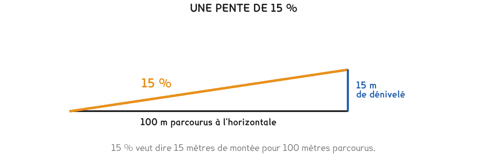

CAP · consolidation maths
15 %, c'est 15 mètres de montée pour 100 mètres parcourus. Rien de plus — et c'est ce qui décide si un engin passe ou non.
4 questions · 6 exercices · 1 repli · 1 figure
Savoirs travaillés

Une pente est un pourcentage comme un autre. Ce n’est pas un angle, ce n’est pas une longueur : c’est un rapport entre ce qu’on monte et ce qu’on parcourt.
| Ce que je cherche | Le calcul | Résultat |
|---|---|---|
| le dénivelé à 15 % | 200 × 15 ÷ 100 | 30 m |
| le dénivelé à 5 % | 200 × 5 ÷ 100 | 10 m |
| la pente si on monte de 8 m | 8 ÷ 200 × 100 | 4 % |
| la pente si on monte de 24 m | 24 ÷ 200 × 100 | 12 % |
On croit qu’une pente de 100 % monte à la verticale. Elle monte de 100 m pour 100 m parcourus : c’est un angle de 45°, déjà infranchissable pour un engin, mais pas vertical. Une pente de 10 % est déjà raide sur un chantier.
Pour aller plus loin
2 % — la pente d’écoulement d’un fil d’eau ou d’une terrasse. Presque invisible à l’œil, mais suffisante pour que l’eau parte.
5 % — une rampe d’accès confortable, celle qu’on trouve devant un bâtiment public.
15 % — le maximum usuel pour descendre un engin dans une fouille. Au-delà, le chargement se déplace et les freins travaillent trop.
Quand la longueur manque pour tenir la pente, on ne triche pas : on allonge la rampe, ou on descend en deux temps. Le sujet est repris au défi 4 du dossier papier.
Une piste d’accès mesure 250 m de long et doit rattraper un dénivelé de 20 m. La pente maximale admise pour les engins est de 10 %.
Exercice · AA
Quelle est la pente de cette piste, en pourcentage ?
Exercice · AA
Quel dénivelé rattraperait-on sur ces 250 m si la pente valait exactement 10 % ?
Exercice · AA
Quelle longueur faudrait-il pour rattraper les 20 m à 10 % exactement ?
Exercice · AA
La piste telle qu’elle est prévue est-elle admissible ? Répondez avec les deux pourcentages qui décident.
Le terrain change, et la piste ne passe plus.
Exercice · AA
Le relevé est repris : le dénivelé est en fait de 30 m, toujours sur 250 m. Quelle est la pente ?
Exercice · AA
Combien de mètres faut-il ajouter à la piste pour redescendre à 10 % avec ce dénivelé de 30 m ?
Fiche de consolidation. Aucun corrigé ; rien n'est enregistré, rien n'est noté.